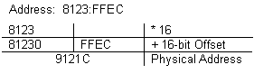
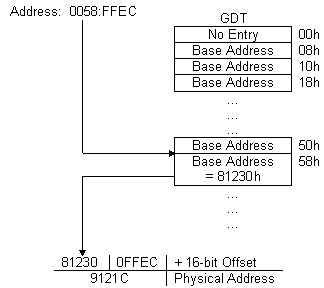
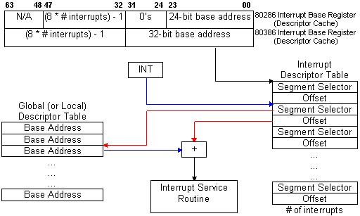

Real Mode
Real mode is the original mode of the processor way back to the 8086 - and is the mode which the processor is initially in upon boot-up -- is in this mode only 1MB of memory is addressable by means of linear addressing. Linear addressing has the form:
 In linear addressing the segment is shifted left 4 bits (same as multiplying by 16) to form a 20-bit base address, the offset is then added to this base address. Thus providing access to a maximum of 1MB plus approximately 64K bytes.
This is the mode which DOS operates in, therefore it can only directly address up to 1 megabyte of memory. In order for it to access more memory it must convert extended to expanded memory and other complicated tasks.
Protected Mode
Protected mode is a processor mode that allows 286 computers to access up to 16MB of memory, and for 386 and greater, the processor can access up to 4GB (Gigabytes - 10^9 bytes) of memory. Intel's protected mode also hosts many additional benefits such as hardware level protection.
Memory Addressing
The direct accessibility to 4GB of memory is provided through the use 15-bit segment selectors which act as indicies into the Global Description Table (GDT) in memory. This table can reside anywhere in memory and so long as the processor knows where to locate it by using LGDT instruction with information about the number of interrupts and the base address. Each individual GDT entry contains the 32-bit address base and limit as well other important information. This concept is shown in the diagram below:
 Interrupts
Interrupts are handled in much the same way, the processor refers to an Interrupt Descriptor Table (IDT) when an interrupt occurs and passes control to the Interrupt Service Routine (ISR). The IDT can be located anywhere in memory and it's address is known by calling the LIDT instruction with the number of interrupt handlers and the base address of the table. Each interrupt descriptor is 8-bytes in length and points the the location of the ISR by giving the segment selector and the it's offset from within that segment.

Hardware Level Protection
Furthermore, protected mode offers applications more stability, as protected mode provides a level of protection for applications that prevents there interfering with one and another. It accomplishes this through a number of different methods, one such method is by preventing segments to access memory beyond it's limits, to prevent runaway code, and other such errors that would result in one segment interfering with another. Segment type checking is also used to ensure that data segments are not executed and for instructions that require segments of a certain type. Privilege levels are used to prevent a tasks with lower privlege levels from interfering with tasks with higher privilege levels.Multitasking